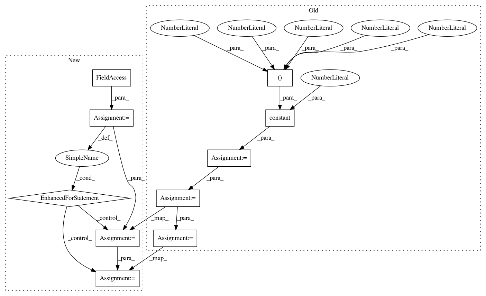

1c0a23c376afde42861c321a4502c69fa6ccb469,tf_agents/networks/utils_test.py,NetworkUtilsTest,test_flatten_and_unflatten_ops_one_batch_dims,#NetworkUtilsTest#,49
Before Change
def test_flatten_and_unflatten_ops_one_batch_dims(self):
batch_squash = utils.BatchSquash(1)
tensor = tf.constant(0, shape=(5, 4, 3, 2, 1))
flat = batch_squash.flatten(tensor)
unflat = batch_squash.unflatten(flat)
self.assertAllEqual((5, 4, 3, 2, 1), flat.shape)
self.assertAllEqual((5, 4, 3, 2, 1), unflat.shape)
After Change
def test_flatten_and_unflatten_ops_one_batch_dims(self):
batch_squash = utils.BatchSquash(1)
for tensor in self._tensors:
flat = batch_squash.flatten(tensor)
unflat = batch_squash.unflatten(flat)
self.assertAllEqual((5, 4, 3, 2, 1), flat.shape)
self.assertAllEqual((5, 4, 3, 2, 1), unflat.shape)
def test_mlp_layers(self):
layers = utils.mlp_layers(conv_layer_params=[(3, 4, 5), (4, 6, 8)],
fc_layer_params=[10, 20],
activation_fn=tf.keras.activations.tanh,
In pattern: SUPERPATTERN
Frequency: 3
Non-data size: 10
Instances
Project Name: tensorflow/agents
Commit Name: 1c0a23c376afde42861c321a4502c69fa6ccb469
Time: 2019-08-16
Author: ebrevdo@google.com
File Name: tf_agents/networks/utils_test.py
Class Name: NetworkUtilsTest
Method Name: test_flatten_and_unflatten_ops_one_batch_dims
Project Name: tensorflow/agents
Commit Name: 1c0a23c376afde42861c321a4502c69fa6ccb469
Time: 2019-08-16
Author: ebrevdo@google.com
File Name: tf_agents/networks/utils_test.py
Class Name: NetworkUtilsTest
Method Name: test_flatten_and_unflatten_ops_no_batch_dims
Project Name: tensorflow/agents
Commit Name: 1c0a23c376afde42861c321a4502c69fa6ccb469
Time: 2019-08-16
Author: ebrevdo@google.com
File Name: tf_agents/networks/utils_test.py
Class Name: NetworkUtilsTest
Method Name: test_flatten_and_unflatten_ops